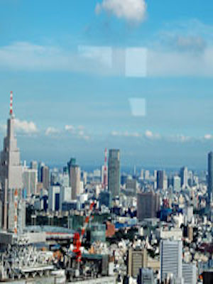

Observation deck is located on the top floor of the Tokyo Metropolitan Government. In nice weather, you can enjoy the night view and sunset light up Mount Fuji from the north observation room, Odaiba and Roppongi Hills, and Tokyo Sky Tree ®, a city like Tokyo in the distance from the south observation room. Cafe Southern outlook room (the cafe directly apply) You can also be a private party charter. How to play the new Tokyo you will find. ※ north observation deck is the first 2.4 months holiday, the first 1.3 Hikyuu (Both Hiraki-shitsu in the case of a public holiday, the next day holiday), in addition to the third Saturday of October, the year-end and New Year holidays south view room (12 29 to 31 months, 2 to 3 January), Metropolitan Government building electrical equipment check Day holiday.
